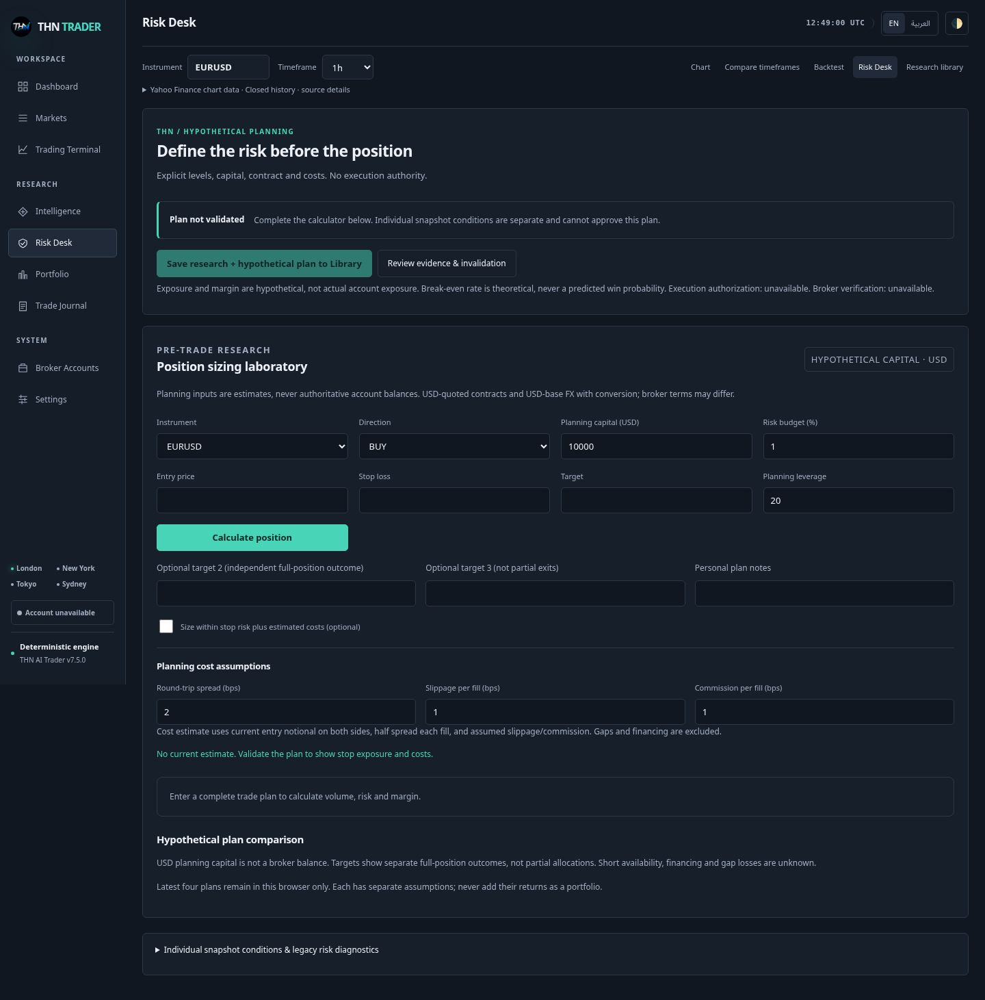
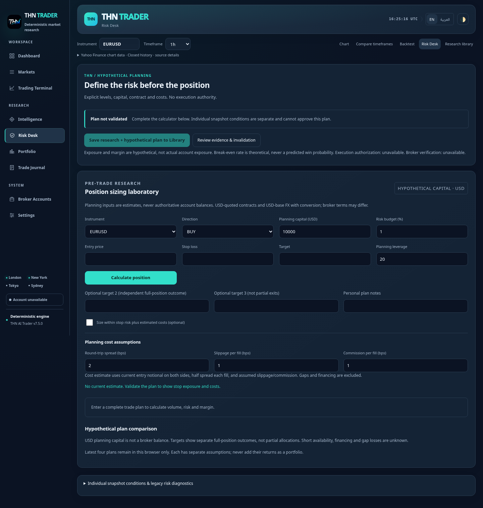

Previous candidate

Revised from owner reference

Actual local browser captures. Previous candidate d0c94e2 vs revised owner-reference candidate. Offline provider fixtures; not live Production. Click an image for native resolution.

